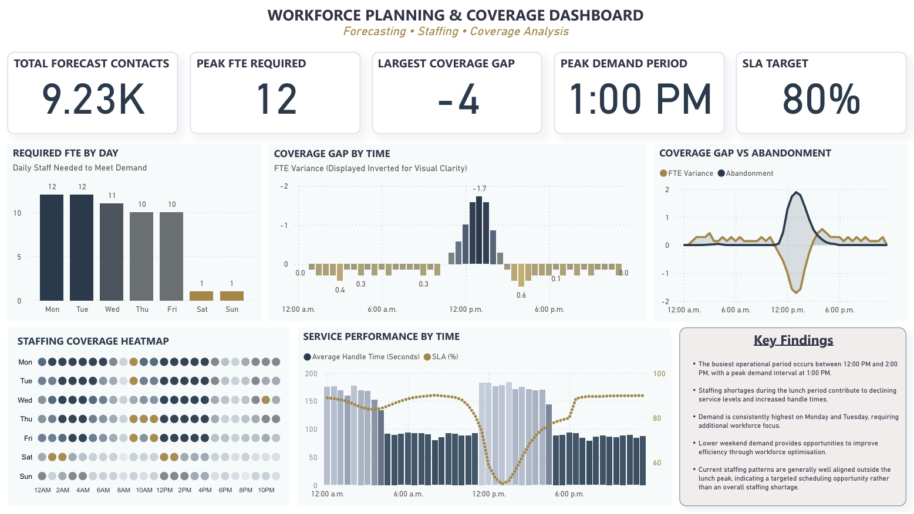
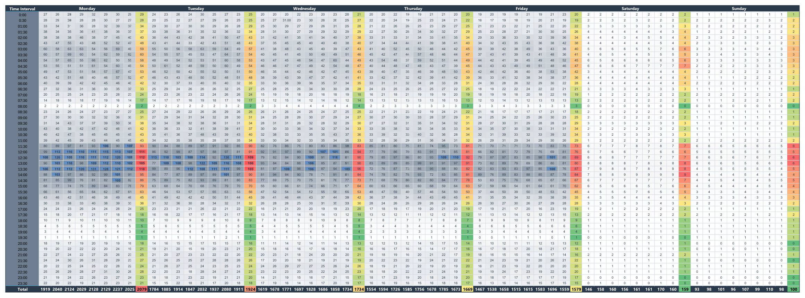
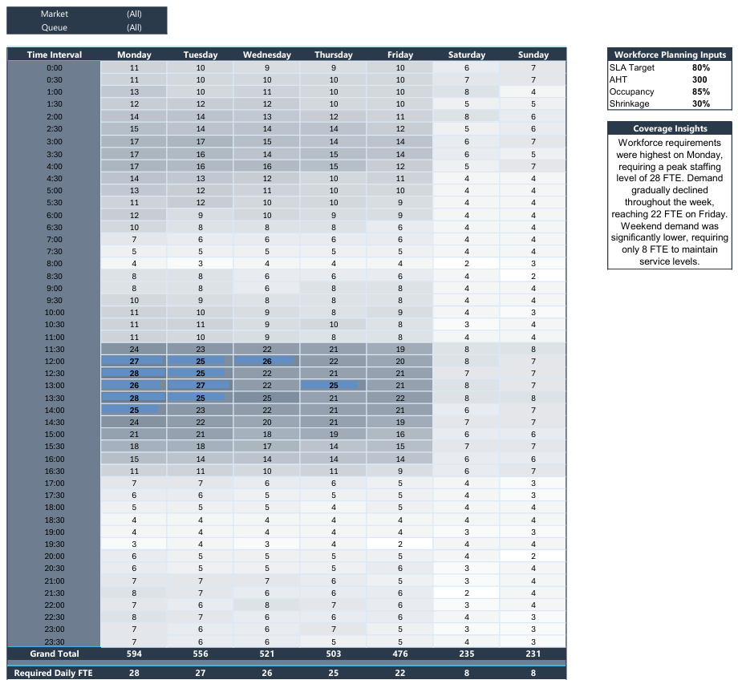
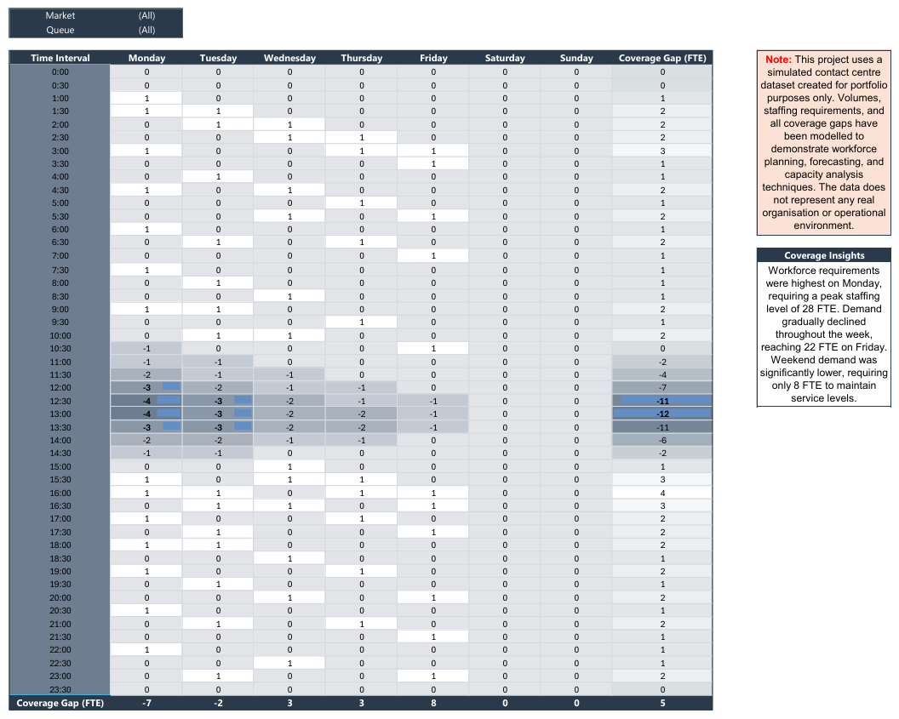

← Back to Portfolio
Workforce Analytics Case Study
Workforce Planning
& Coverage Dashboard
Excel • Power BI • Forecasting • Workforce Planning
A workforce planning case study combining an eight-week Excel demand model with a Power BI dashboard to analyse staffing requirements, intraday coverage, service performance, and schedule optimisation opportunities.
Business Problem
Contact centre leaders need enough staff available throughout the day to meet customer demand without creating unnecessary idle capacity. This project models interval-level contact arrivals, converts demand into required staffing, and identifies where scheduled coverage is misaligned with workload.
The final Power BI dashboard brings together forecast demand, required FTE, coverage gaps, service performance, abandonment, and intraday staffing patterns in one executive view.

- When does contact demand peak across the operating day?
- How many FTE are required to meet expected demand?
- Where do the largest staffing shortages occur?
- How do coverage gaps affect SLA, AHT, and abandonment?
- Where could schedules be adjusted to improve efficiency?
- 9,229 forecast contacts across seven days
- Peak requirement of 12 FTE
- Largest coverage gap of 4 FTE
- Peak demand period at 1:00 PM
- Service level target of 80%
1. Eight-Week Historical Arrivals
Eight weeks of simulated interval-level arrivals were modelled to identify recurring workload patterns across weekdays and weekends. The heatmap makes demand peaks immediately visible, particularly around the lunchtime period.

2. Required Staffing by Interval
Historical arrivals were converted into interval-level staffing requirements using workforce planning assumptions including service level, average handle time, occupancy, and shrinkage.

3. Coverage Gap Analysis
Required staffing was compared with scheduled coverage to identify periods of overstaffing and understaffing. The strongest shortages occurred around the midday demand peak, while most other intervals remained broadly aligned.

The busiest operational period occurred between 12:00 PM and 2:00 PM, with demand peaking at approximately 1:00 PM.
Staffing shortages during the lunch period coincided with reduced service levels, longer handle times, and increased customer abandonment.
Monday and Tuesday required the greatest staffing coverage, while weekend demand was significantly lower and created opportunities for improved schedule efficiency.
Outside the lunchtime peak, scheduled staffing was generally well aligned with workload, indicating a targeted scheduling issue rather than an organisation-wide capacity shortage.
Reallocate breaks and lunches away from the 12:00 PM to 2:00 PM peak and introduce staggered or split shifts to strengthen midday coverage.
Monitor SLA, abandonment, and average handle time alongside FTE variance to measure whether schedule changes improve customer outcomes.
Review weekend staffing patterns for potential efficiency gains while maintaining adequate coverage for lower-volume demand.
Refresh the workforce model regularly as new interval data becomes available so staffing assumptions remain aligned with changing demand.